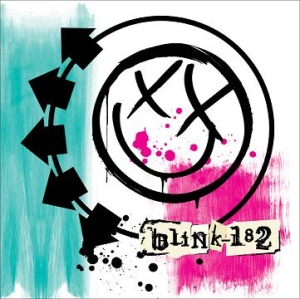

Blink-182 (2003)

"Нажмите на картинку, чтобы открыть ее в полном размере
Описание
Blink-182 — пятый студийный альбом группы, выпущенный в 2003 году. Это первый альбом, записанный без продюсера Джерри Финна, и он отличается более взрослым и мрачным звучанием. Тексты стали серьезнее, а музыка — экспериментальнее. Многие фанаты считают этот альбом самым зрелым в дискографии группы.
Подробное описание
Этот альбом ознаменовал серьёзные изменения в звучании группы. После ухода продюсера Джерри Финна музыканты решили экспериментировать. Песня "I Miss You" стала неожиданным хитом, несмотря на медленный темп и акустическое звучание — нехарактерное для поп-панка. В записи альбома использовались необычные инструменты, включая пианино и струнные. Лирика стала более мрачной и личной: в песне "Stockholm Syndrome" рассказывается о сложных отношениях, а "Violence" исследует тёмные стороны человеческой натуры. Многие критики называют этот альбом самым взрослым и экспериментальным в дискографии Blink-182.
Характеристики
- Год выпуска: 2003
- Лейбл: Geffen Records
- Продюсер: Джерри Финн (треки 1-5, 7-13, 15-16), группа Blink-182 (треки 6, 14)
- Длительность: 49 минут
- Самые известные песни: "Feeling This", "I Miss You", "Down", "Always"
- Стиль: Более мрачный и экспериментальный поп-панк с элементами альтернативного рока